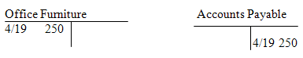

Accounting is a glorious but misunderstood field. The popular view is that it's mostly mind-numbing number-crunching; it certainly has some of that, but it's also a rich intellectual pursuit with an abundance of compelling and controversial issues. Accountants are often stereotyped as soulless drones laboring listlessly in the bowels of corporate bureaucracies. But many accountants will tell you that it's people skills, not technical knowledge, that are crucial to their success. And although it's often thought of as a discipline of pinpoint exactitude with rigid rules, in practice accountants rely heavily on best estimates and educated guesses that require careful judgment and strong imagination.
Actually, stereotyping accounting and accountants, either positively or negatively, is useless because accounting involves so many different activities. The short-but-sweet description of accounting is "the language of business." A more formal definition is offered by The American Accounting Association: "The process of identifying, measuring and communicating economic information to permit informed judgments and decisions by users of the information."
However defined, accounting plays a vital role in facilitating all forms of economic activity in the private, public and nonprofit sectors, in endeavors ranging from coal mining to community theater to municipal finance.
The name that looms largest in early accounting history is Luca Pacioli, who in 1494 first described the system of double-entry bookkeeping used by Venetian merchants in his Summa de Arithmetica, Geometria, Proportioni et Proportionalita. Of course, businesses and governments had been recording business information long before the Venetians. But it was Pacioli who was the first to describe the system of debits and credits in journals and ledgers that is still the basis of today's accounting systems.
The industrial revolution spurred the need for more advanced cost accounting systems, and the development of corporations created much larger classes of external capital providers - shareowners and bondholders - who were not part of the firm's management but had a vital interest in its results. The rising public status of accountants helped to transform accounting into a profession, first in the United Kingdom and then in the United States. In 1887, thirty-one accountants joined together to create the American Association of Public Accountants. The first standardized test for accountants was given a decade later, and the first CPAs were licensed in 1896.
The Great Depression led to the creation of the Securities and Exchange Commission (SEC) in 1934. Henceforth all publicly-traded companies had to file periodic reports with the Commission to be certified by members of the accounting profession. The American Institute of Certified Public Accountants (AICPA) and its predecessors had responsibility for setting accounting standards until 1973, when the Financial Accounting Standards Board (FASB) was established. The industry thrived in the late 20th century, as the large accounting firms expanded their services beyond the traditional auditing function to many forms of consulting.
The Enron scandals in 2001, however, had broad repercussions for the accounting industry. One of the top firms, Arthur Andersen, went out of business and, under the Sarbanes-Oxley Act, accountants faced tougher restrictions on their consulting engagements. One of the paradoxes of the profession, however, is that accounting scandals generate more work for accountants, and demand for their services continued to boom throughout the early part of the 21st century. (For details on this and other scandals see, The Biggest Stock Scams Of All Time.)
Accounting can be divided into several areas of activity. These can certainly overlap and they are often closely intertwined. But it's still useful to distinguish them, not least because accounting professionals tend to organize themselves around these various specialties.
Financial Accounting
Financial accounting is the periodic reporting of a company's financial position and the results of operations to external parties through financial statements, which ordinarily include the balance sheet (statement of financial condition), income statement (the profit and loss statement, or P&L), and statement of cash flows. A statement of changes in owners' equity is also often prepared. Financial statements are relied upon by suppliers of capital - e.g., shareholders, bondholders and banks - as well as customers, suppliers, government agencies and policymakers. (To learn more on this read, What You Need To Know About Financial Statements.)
There's little use in issuing financial statements if each company makes up its own rules about what and how to report. When preparing statements, American companies use U.S. Generally Accepted Accounting Principles, or U.S. GAAP. The primary source of GAAP is the rules published by the FASB and its predecessors; but GAAP also derives from the work done by the SEC and the AICPA, as well standard industry practices. (For more on this see, What is the difference between the IAS and GAAP?)
Management Accounting
Where financial accounting focuses on external users, management accounting emphasizes the preparation and analysis of accounting information within the organization. According to the Institute of Management Accountants, it includes "…designing and evaluating business processes, budgeting and forecasting, implementing and monitoring internal controls, and analyzing, synthesizing and aggregating information…to help drive economic value."
A primary concern of management accounting is the allocation of costs; indeed, much of what now is considered management accounting used to be called cost accounting. Although a seemingly mundane pursuit, how to measure cost is critical, difficult and controversial. In recent years, management accountants have developed new approaches like activity-based costing (ABC) and target costing, but they continue to debate how best to provide and use cost information for management decision-making.
Auditing
Auditing is the examination and verification of company accounts and the firm's system of internal control. There is both external and internal auditing. External auditors are independent firms that inspect the accounts of an entity and render an opinion on whether its statements conform to GAAP and present fairly the financial position of the company and the results of operations. In the U.S., four huge firms known as the Big Four - PricewaterhouseCoopers, Deloitte Touche Tomatsu, Ernst & Young, and KPMG - dominate the auditing of large corporations and institutions. The group was traditionally known as the Big Eight, contracted to a Big Five through mergers and was reduced to its present number in 2002 with the meltdown of Arthur Andersen in the wake of the Enron scandals. (For further information see, An Inside Look At Internal Auditors.)
The external auditor's primary obligation is to users of financial statements outside the organization. The internal auditor's primary responsibility is to company management. According to the Institute of Internal Auditors (IIA), the internal auditor evaluates the risks the organization faces with respect to governance, operations and information systems. Its mandate is to ensure (a) effective and efficient operations; (b) the reliability and integrity of financial and operational information; (c) safeguarding of assets; and (d) compliance with laws, regulations and contracts.
Tax Accounting
Financial accounting is determined by rules that seek to best portray the financial position and results of an entity. Tax accounting, in contrast, is based on laws enacted through a highly political legislative process. In the U.S., tax accounting involves the application of Internal Revenue Service rules at the Federal level and state and city law for the payment of taxes at the local level. Tax accountants help entities minimize their tax payments. Within the corporation, they will also assist financial accountants with determining the accounting for income taxes for financial reporting purposes.
Fund Accounting
Fund accountingis used for nonprofit entities, including governments and not-for-profit corporations. Rather than seek to make a profit, governments and nonprofits deploy resources to achieve objectives. It is standard practice to distinguish between a general fund and special purpose funds. The general fund is used for day-to-day operations, like paying employees or buying supplies. Special funds are established for specific activities, like building a new wing of a hospital.
Segregating resources this way helps the nonprofit maintain control of its resources and measure its success in achieving its various missions.
The accounting rules for federal agencies are determined by the Federal Accounting Standards Advisory Board, while at the state and local level the Governmental Accounting Standards Board (GASB) has authority.
Forensic Accounting
Finally, forensic accounting is the use of accounting in legal matters, including litigation support, investigation and dispute resolution. There are many kinds of forensic accounting engagements: bankruptcy, matrimonial divorce, falsifications and manipulations of accounts or inventories, and so forth. Forensic accountants give investigate and analyze financial evidence, give expert testimony in court and quantify damages.
The Difference Between Accounting and Bookkeeping
Bookkeeping is an unglamorous but essential part of accounting. It is the recording of all the economic activity of an organization - sales made, bills paid, capital received - as individual transactions and summarizing them periodically (annually, quarterly, even daily). Except in the smallest organizations, these transactions are now recorded electronically; but before computers they were recorded in actual books, thus bookkeeping.
The accountants design the accounting systems the bookkeepers use. They establish the internal controls to protect resources, apply the principles of standards-setting organizations to the accounting records and prepare the financial statements, management reports and tax returns based on that data. The auditors that verify the accounting records and express an opinion on financial statements are also accountants, as are management, tax and forensic accounting specialists. (To learn more see, Accounting Not Just For Nerds Anymore.)
Double-Entry Bookkeeping
The economic events of a business are recorded as transactions and applied to the accounts (hence accounting). For example, the cash account tracks the amount of cash on hand; the sales account records sales made. The chart of accounts of even small companies has hundreds of accounts; large companies have thousands.
The transactions are posted in journals, which were (and for some small organizations, still are) actual books; nowadays, of course, the journals are typically part of the accounting software. Each transaction includes the date, the amount and a description.
For example, suppose you have a stationery store. On April 19, a saleswoman for an antiques company visits you, and you buy a lamp for your office for $250. A journal entry to record the transaction as a debit to the Office Furniture account and a $250 credit to Accounts Payable could be written as follows (Dr. is the abbreviation for debit, while Cr. is for credit):
|
Date |
Account |
Dr. |
Cr. |
|
April 19 |
Office Furniture |
250 | |
|
Accounts Payable |
250 | ||
|
(Bought antique lamp; voucher #0016) | |||
Each accounting transaction affects a minimum of two accounts, and there must be at least one debit and one credit.
Keeping Good Accounting Records
Even a seemingly simple transaction like this one raises a host of accounting issues.
Date:Suppose you had already agreed by phone to buy the lamp on April 15, but the paperwork wasn't done until April 19. And the lamp wasn't delivered on the 19th, but the 23rd. Or even as you bought it, you were thinking that you didn't like it that much, and there's a strong chance you'll return it by the 30th, when the sale becomes final. On which date - 15th, 19th, 23rd, or 30th - did an economic event occur for which a transaction should be recorded?
Amount:The sales price is $250, but you get a 10% discount (to $225) if you pay in 30 days; business is bad, though, so you may need the full 90 days to pay. Similarly, however, you know the antique business is also lousy; even though you agreed to pay $250, you can probably chisel another $50 off the price if you threaten to return it. On the other hand, being in the stationery business, you know one of your customers has been looking for a lamp like that for a long time; he told you in February he'd pay $300 for one.
So what amounts should you record on April 19 (if indeed you record a transaction on that date)? $250 or $225 or $200 or $300?
Accounts:You've debited the Office Furniture account. But actually you buy and sell antiques frequently to your customers, and you're always ready to sell the lamp if you get a good offer. Instead of an Office Furniture account used for fixed assets, should the lamp be recorded in a Purchases account you use for inventory? And if this was a big company, there might be dozens of office furniture sub-accounts to choose from.
Accountants rely on various resources to answer such questions. There are basic, time-honored accounting conventions: standards set forth by various rules-making bodies, long-standing industry practices and, most important, their own judgment honed through years of experience.
But the important point is that even the most basic accounting questions - when did an economic event take place? What is the value of the transaction? Which accounts are affected by the transaction? - can get very complex and the right answers prove very elusive. There's no excuse for out-and-out misrepresentation of company results and sloppy auditing that certainly occurs. But the seeming precision of financial statements, no matter how conscientiously prepared, is belied by the uncertainty and ambiguity of the business activities they seek to represent.
Debits and Credits
We're accustomed to thinking of a "credit" as something "good" - our account is credited when we get a refund; you get "extra credit" for being polite. Meanwhile, a "debit" is something negative - a debit reduces our bank balance; it's used to mean shortcoming or disadvantage.
In accounting, debit means one thing: left-hand side. Credit means one thing: right-hand side. When you receive cash - a "good" thing - you increase the Cash account by debiting it. When you use cash - a "bad" thing - you decrease Cash by crediting it. On the other hand, when you make a sale, which is nice, you credit the Sales account; when someone returns what you sold, which is not nice, you debit sales.
"Good" and "bad" have nothing to do with debit and credit.
Debit = Left; Credit = Right. That's it. Period.
Accrual vs. Cash Basis Accounting
As we've seen, deciding when an economic event occurs and an accounting transaction should be recorded is a matter of judgment. Accrual accounting looks to the economic reality of the business, rather than the actual inflows and outflows of cash. (For more on this see, The Essentials of Cash Flow.)
Although cash basis statements are simpler and make good sense for many individual taxpayers and small businesses, it results in misleading financial statements. Consider a Halloween costume maker: it conceives, produces and sells costumes throughout the year, but gets paid for its costumes mostly in October. If sales were recognized only when cash was received, October would show an enormous profit while all other months would show losses. Accrual accounting seeks to match the revenues earned during a period with the expenses incurred to generate them, regardless of when cash comes in or goes out. (For details see, When should a company recognize revenues?)
As implied earlier, today's electronic accounting systems tend to obscure the traditional forms of the accounting cycle. Nevertheless, the same basic process that bookkeepers and accountants used to perform by hand are present in today's accounting software. Here are the steps in the accounting cycle:
(1) Identify the transaction from source documents, like purchase orders, loan agreements, invoices, etc.
(2) Record the transaction as a journal entry (see the Double-Entry Bookkeeping Section above).
(3) Post the entry in the individual accounts in ledgers. Traditionally, the accounts have been represented as Ts, or so-called T-accounts, with debits on the left and credits on the right.
(4) At the end of the reporting period (usually the end of the month), create a preliminary trial balance of all the accounts by (a) netting all the debits and credits in each account to calculate their balances and (b) totaling all the left-side (i.e, debit) balances and right-side (i.e., credit) balances. The two columns should be equal.
(5) Make additional adjusting entries that are not generated through specific source documents. For example, depreciation expense is periodically recorded for items like equipment to account for the use of the asset and the loss of its value over time.
(6) Create an adjusted trial balance of the accounts. Once again, the left-side and right-side entries - i.e. debits and credits - must total to the same amount. (To learn more see, Fundamental Analysis: The Balance Sheet.)
(7) Combine the sums in the various accounts and present them in financial statements created for both internal and external use.
(8) Close the books for the current month by recording the necessary reversing entries to start fresh in the new period (usually the next month).
Nearly all companies create end-of-year financial reports, and a new set of books is begun each year. Depending on the nature of the company and its size, financial reports can be prepared at much more frequent (even daily) intervals. The SEC requires public companies to file financial reports on both a quarterly and yearly basis.
Financial statements present the results of operations and the financial position of the company. Four statements are commonly prepared by publicly-traded companies: balance sheet, income statement, cash flow statement and statement of changes in equity.
Balance Sheet (Statement of Financial Position)
The balance sheet tells you whether the company can pay its bills on time, its financial flexibility to acquire capital and its ability to distribute cash in the form of dividends to the company's owners.
The top of the balance sheet has three items: (1) the legal name of the entity; (2) the title (i.e., balance sheet or statement of financial position); and (3) the date of the statement. Importantly, the financial position presented is always for the entity itself, not its owners. And the balance sheet is always for a specific point in time: instead of just a date of, say, December 31, 20XX, it would be more accurate to write December 31, 20XX, 11:59:59, or any particular moment on the 31st.
The balance sheet itself presents the company's assets, liabilities and shareholders' equity. Each is defined in Statement of Financial Accounting Concepts No. 6, but to oversimplify:
Hence the key accounting equation:
Assets = Liabilities + Owners Equity, or A=L+OE
In the most common format, known as the account form, the assets in a balance sheet are listed on the left; they ordinarily have debit balances. Liabilities and owners equity are on the right, and typically have credit balances. These three main categories are separated and further divided to show important relationships and subtotals.
Assets are broken down into current and noncurrent (or long-term). Assets are listed from top to bottom in order of decreasing liquidity, i.e., how fast they can be converted to cash. (For more on this see, Reading The Balance Sheet.)
Current assets are cash and other assets that are expected to be used during the normal operating cycle of the business, usually one year. They typically include cash and cash equivalents, short-term investments, accounts receivables, inventory and prepaid expense. Noncurrent assets will not be realized in full within one year. They typically include long-term investments: property, plant and equipment; intangible assets and other assets.
Liabilities are listed in order of expected payment. Obligations expected to be satisfied within one year are current liabilities. They include accounts payable, trade notes payable, advances and deposits, current portion of long-term debt and accrued expenses. Noncurrent liabilities include bonds payable and other forms of long-term capital.
The structure of the owners' equity section depends on whether the entity is an individual, a partnership or a corporation. Assuming it's a corporation, the section will include capital stock, additional paid-in capital, retained earnings, accumulated other comprehensive income and treasury stock.
Balance sheet data can be used to compute key indicators that reveal the company's financial structure and its ability to meet its obligations. These include working capital, current ratio, quick ratio, debt-equity ratio and debt-to-capital ratio. (To learn more read, Testing Balance Sheet Strength.)
Income Statement
The income statement (also known as the profit and loss statement or P&L) tells you both the earnings and profitability of a business. The P&L is always for a specific period of time, such as a month, a quarter or a year. Because a company's operations are ongoing, from a business perspective these cut-offs are arbitrary, and they result in many of the problems in income measurement. Nevertheless, periodic income statements are essential, because they allow users to compare results for the company over time and to the results of other firms for the same period. Depending on the industry, year over year comparisons that eliminate seasonal variables may be especially useful.
One way to think of the income statement is as one big Owners' Equity (OE) account. In essence, a $100 sale increases both assets and owners' equity:
|
Dr. |
Cr. | |
|
Asset (Cash, A/R) |
100 | |
|
Owners Equity (Sales) |
100 |
The recording of $100 in expense for cost of goods sold (CGS), supplies, depreciation, insurance, etc. decreases assets and owners equity:
|
Dr. |
Cr. | |
|
Owners Equity (CGS, supplies, etc.) |
100 | |
|
Assets (Cash, Inventory, Equipment) |
100 |
Of course, accounting is vastly more complicated than this representation, and debits and credits are recorded under many rules and treatments for many accounts. But ultimately, if all the credits to OE during a period are greater than the debits, you have net income and OE (in the form of retained earnings) increases; if there are more debits than credits, you have a net loss and OE decreases.
The format of the income statement has been determined by a series of accounting pronouncements; some of these are decades old, others released in the past few years. Like the balance sheet, the income statement is broken into several parts:
Income from continuing operations is the heart of the P&L. It includes sales (or revenue), cost of goods sold, operating expenses, gains and losses, other revenue and expense items that are unusual or infrequent but not both, and income tax expense.
This section of the income statement is used to compute the key profitability ratios of gross margin, operating margin, and pretax margin that help readers assess the ability of the company to generate income from its activities. Results from continuing operations are of primary interest because they are ongoing and can be predictive of future earnings; investors put less weight on discontinued operations (which are about the past) and extraordinary items (unusual and infrequent, thus unlikely to reoccur). Companies thus have an incentive to push negative items that belong in continuing operations into other categories. (For further reading on the income statement see Find Investment Quality In The Income Statement.)
Net income is the "bottom line"; it is expressed both on an actual and, after comprehensive income, on a per share basis. If a company has hybrid securities, like convertible bonds, there is the potential for additional shares to be created and earnings to be diluted. Earnings per share may therefore be presented on basic and diluted bases, in accordance with the complex rules of FAS 128.
Statement of Changes in Owners Equity
A separate Statement of Changes in Stockholders' (or Owners) Equity is also prepared that reconciles the various components of OE on the balance sheet for the start of the period with the same items at the end of the period. The statement recognizes the primacy of OE for investors and other readers of financial statements.
Statement of Cash Flows
The cash flow statement tells you the sources and uses of cash during the period (in fact, the term "sources and uses statement" is a synonym). It also provides information about the company's investing and financing activities during the period. (To learn more see Analyze Cash Flow The Easy Way and What Is A Cash Flow Statement?)
Under accrual accounting and the matching principle, accountants seek to record economic events regardless of when cash is actually received or used, with a view toward matching the revenues for the period with the costs incurred to generate them. But in addition to financial statements that include accounting entries that are theoretical in nature, users are vitally interested in the actual cash received and disbursed during the period. In fact, depending on the company and the user, the cash flow statement may be of prime importance. Like the income statement, the statement of cash flows is always for some period of time.
The format of a cash flow statement is typically:
There are two methods for preparing the cash flow statement, direct and indirect. Using the direct method, the accountant shows the items that affected cash flow, such as cash collected from customers, interest received, cash paid to suppliers, etc. The indirect method adjusts net income for any revenue and expense item that did not result from a cash transaction. Under FAS95, the direct method is preferred, although the indirect method - the more traditional approach favored by preparers and less costly to prepare - is still widely used.
Generally Accepted Accounting Principles (GAAP)
A key prerequisite for meaningful financial statements is that they be comparable to those for other companies, especially firms within the same industry. To meet that requirement, statements are prepared in accordance with Generally Accepted Accounting Principles (or, more commonly, GAAP), which "encompasses the conventions, rules and procedures, necessary to define accepted accounting practice at a particular time."
In the wake of the crash of 1929, the first serious attempt to codify GAAP was made by the AICPA (then the American Institute of Accountants) working with the New York Stock Exchange, which culminated in the creation of a Committee on Accounting Procedure. The Committee's resources were limited and in 1959 the Accounting Principles Board (APB) was established within the AICPA to take over the rule-making function. The APB was superseded in 1972 by the Financial Accounting Standards Board (FASB), an independent, not-for-profit organization with a governing board of seven members - three from public accounting, two from private industry, one from academia and one from an oversight body. (For more on GAAP visit the U.S. GAAP website.)
Current GAAP in the U.S. (or U.S. GAAP) includes rules from the FASB and these predecessors. Over time, standards are eliminated and amended as business conditions change and new research performed. Although in the U.S. the SEC has delegated the function of accounting rule-making to FASB, it is not the only source of GAAP. Research from the AICPA, best industry practices as defined by research and traditions, and the activities of the SEC itself all play a role in defining GAAP. (For more on the SEC read Policing The Securities Market: An Overview of the SEC.)
Further, within the FASB and AICPA themselves, there are various sources of GAAP. These include statements (of primary importance), interpretations, staff positions, statements of position, accounting guides, and so forth. Naturally, with so much documentation for GAAP, contradictions ensue. To eliminate the uncertainties, in 2008 the FASB issued FAS 162 to clarify the hierarchy in deciding which source of GAAP takes precedence over another. (For more on FASB, visit the FASB website.)
Accounting is how business keeps score, and business is no different than football when it comes to setting the rules of the game. Many accounting standards are firmly established, others continue to be debated vigorously among the players and a few are so highly controversial they get even people on the sidelines riled up. One example from the 2008 financial crisis is mark-to-market accounting, on which accountants, presidential candidates and pundits alike weighed in. Accounting standards setting then becomes part of the political process, and depending on the strength and commitment of the various forces, the rules are eliminated, amended or left alone.
Disclosure
One seemingly technical element in accounting standards that is of huge importance is disclosure. In any document, where you put information - in a screaming headline, or the 53rd footnote in Appendix Q - has a great deal to do with which readers view its relative importance. Financial statements are no different.
Besides the actual numbers on the balance sheet, P&L and statement of cash flows, a great deal of information is also provided in the notes to the financial statements. Some key financial information is put directly into the financial statements in parentheses (e.g. on the balance sheet and the number of shares authorized and issued for common stock). Notes contain information that should receive this favorable treatment but because the information may be considerable and include tables, it is included as a footnote instead.
The admonition to readers that "the accompanying notes are an integral part of these statements" alerts them to the notes' importance. But since they are at the bottom - and because they are often numerous, lengthy and, at times, impenetrable - more casual users ignore them. (To learn more see Footnotes: Start Reading The Fine Print.)
What's included in the notes? There's information on securities held, inventories, debt, pension plans and other key elements in determining the company's financial position. In addition, the notes will contain information about the company's accounting policies. Under GAAP, companies often do have discretion to use varying methods for valuing assets, and recognizing costs and revenue. This "Summary of Significant Accounting Policies" will appear as the first note to the statement or in a separate section.
There are other required disclosures external to the financial statements and notes, such as the Management Discussion and Analysis (MD&A), required by the SEC. In all, the list of required disclosures is long, detailed and complex. Although this exhaustive release of company information increases transparency, it does mean that financial statements become unwieldy. And the financial meltdown of 2008 - following the reforms implements in the wake of the Enron scandals a few years before - had observers once again wondering whether, despite all the disclosures, the necessary information for decision-making is being included in financial statements. (For further reading read An Investor's Checklist To Financial Footnotes.)
International Financial Reporting Standards (IFRS)
Outside the U.S., International Financial Reporting Standards (IFRS) have gained increasing prominence and are replacing the national GAAPs of many countries, including Australia, Canada and Japan; IFRS has been required for countries in the European Union since 2006. More than 100 nations have now adopted IFRS, although some continue to have elements of their own national GAAP in reporting standards. IFRS are set by the International Accounting Standards Board (IASB), which is the standard-setting body of the International Accounting Standards Committee Foundation (IASC Foundation). Just as the FASB incorporates the rules of former standards-settings bodies, IFRS includes the International Accounting Standards (IAS) that were issued by the International Accounting Standards Committee (IASC) from 1973 to 2000.
There has been much debate in the accounting profession of "principles-based" versus "rules-based" accounting. Principles-based systems offer broader guidelines in accounting treatment, within which accountants exercise their best judgment; rules-based systems are more prescriptive and specific. IFRS are considered more principles-based than U.S. GAAP, although there are certainly many specific rules included in IFRS as well (and some observers think they are trending in the rules-based direction).
To some extent, the different emphases reflect the differing business and legal cultures between U.S. and much of the world, notably Europe. There is concern that a principles-based system will simply give U.S. managers more freedom to tilt the numbers in their favor. Others argue that the rules-based system is overly complex and that it hasn't prevented U.S. corporate scandals.
The argument may eventually be moot, as the U.S. moves toward joining the world in adopting IFRS standards; the SEC has already issued a "road map" to that end. Nevertheless, IFRS adoption is hardly a done deal. And as has happened in other countries, the U.S., in adopting IFRS, may seek to retain various elements of U.S. GAAP.
It's a conundrum: uniform IFRS adoption worldwide would certainly make it easier to compare the financials of companies in different countries. On the other hand, national GAAPs were developed within the prevailing business, legal and social environments of each country. On both political and practical levels, it's difficult to eliminate all such individuality and some wonder if it is even desirable.
Government Accounting
The operating environments of businesses and governments differ enormously. Companies compete with each other for customer revenue and constantly worry about becoming insolvent; governments are funded through the involuntary payment of taxes, and face no threat of liquidation. Governments do not have equity owners who demand profits; instead, they are accountable to citizens for the use of resources. Governments thus require much different financial reports, and hence different accounting standards.
The Federal Accounting Standards Advisory Board (FASAB) was established in 1990 as a federal advisory committee to develop accounting standards and principles for the
The Government Accounting Standards Board (GASB) was established in 1984 to provide standards for state and local governments. Like the FASB, the GASB is under the auspices of the Financial Accounting Foundation (FAF), a private, not-for-profit entity, which chooses the seven members of its board.
{kind=link}